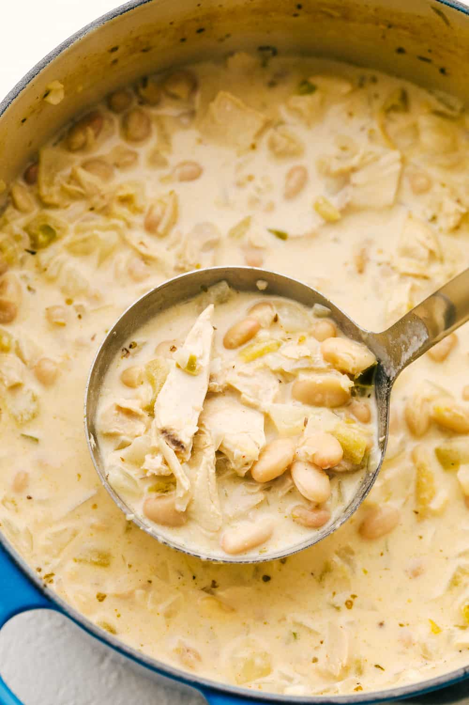

White Chicken Chili

Description:
Easy to make chili. Minimal prep and cook time, ready within an hour. Add spice as desired.
Ingredients:
- 16oz Chicken Broth
- One 7oz can Green Chilis
- Two 15oz can Northern Beans
- One tsp Salt and Pepper
- Two tsp Oregano
- Three tsp Cumin
- One Cup Hot Sauce of Choice
- One Small onion; Diced
- Two tsp Minced Garlic
- One Shredded Roasted Chicken
Instructions:
- Dice onion
- Shred Chicken
- Mix all ingredients in crock pot. cook for about 20 minutes or until hot.